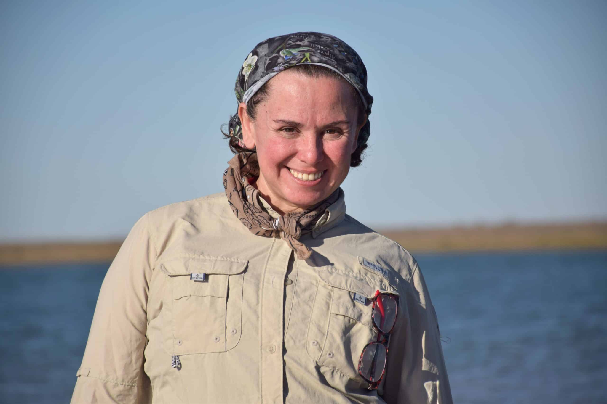
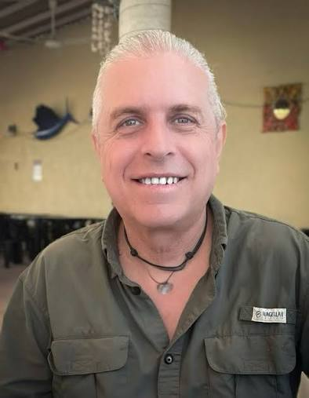
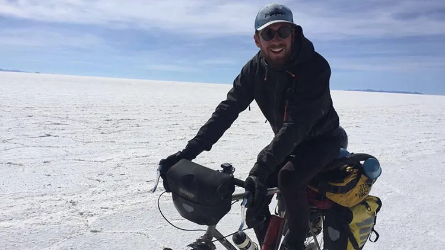
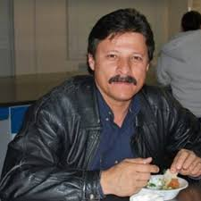

Nélida Barajas Acosta
Mexico · Sonoran Desert · Gulf of California
Conservation Leadership · Desert & Marine Ecology · Environmental Education · Community Conservation
View profile →
A growing international community advancing the understanding and conservation of springs worldwide.
Select a profile to learn more about each member, their region, and their areas of expertise.

Mexico · Sonoran Desert · Gulf of California
Conservation Leadership · Desert & Marine Ecology · Environmental Education · Community Conservation

Mexico · Mesoamerica · Global
Freshwater Ecosystems · Endangered Fish Conservation · Conservation Biology · Protected Areas

Global
Freshwater Conservation Communications · Public Engagement · Biodiversity Awareness

Global
Freshwater Fish Conservation · Systematic Ichthyology · Freshwater Biodiversity

North America · Global
Springs Ecology · Ecohydrology · Conservation Science · Data Synthesis

Southeast Asia · North America · Global
Freshwater Fish Conservation · Community-Based Conservation · Conservation Partnerships

North America · Latin America · Guiana Shield · Global
Key Biodiversity Areas · Herpetology · Biodiversity Assessment · Conservation Prioritization

North America
Springs Ecology · Entomology

North America
Spring Fishes · Ichthyology

Mexico · Sonoran Desert · Northwestern Mexico
Freshwater Fish Conservation · Conservation Genetics · Ichthyology · Systematics